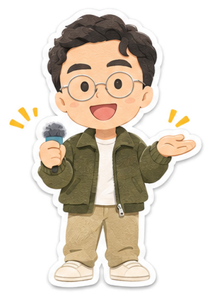

複製一段話給 Claude Code，
它每小時自己看群組。
四步，約 15 分鐘。

按複製，整段貼給 Claude Code。
請幫我做一個「LINE 追專案」排程，資料放在 ~/LINE追專案/。全程繁體中文。 一、先問我這幾件事（一次問完，我回答後再做）： 1. 我的 LINE 官方帳號後台聊天網址（Chrome 打開 chat.line.biz 點進帳號後，網址列那串）。 2. 要追哪些客戶群組（群組名稱裡的關鍵字，一個專案一個）。 3. 誰是「我們」：我方同事在 LINE 顯示的名字。其他人都算客戶。 4. 內部群組叫什麼（提醒要發在這裡）。 5. 客戶等多久沒人回要提醒（建議 4、8、24 小時各提醒一次）、幾點到幾點不要發、週末發不發。 6. 要不要開「客戶問常見問題，AI 先回」：要的話給我常見問題和標準回答；不給就不開。 二、在 Chrome 先測一次讀得到： - 用 Claude in Chrome 打開我的後台網址。看到登入頁就停下來叫我自己登入，不要輸入任何帳密。 - 聊天清單是 .chatlist .list-group-item；點進群組後訊息在 .chatroom，日期 .chatsys-date，每則 .chat，寄件人 .chat-header span（連續訊息沒標題就沿用上一則），文字 .chat-item-text。class 帶 chat-primary 的綠色泡泡是官方帳號自己發的。 - 選一個群組，把最後 5 則讀給我看，我說對了再往下。 三、寫 ~/LINE追專案/掃描程序.md，把我的答案和下面規則寫進去： 1. 讀每個追蹤群組最近的訊息。 2. 判斷：客戶最後一則（「好／OK／謝謝」、貼圖這種收尾話不算）之後我方沒回、超過 20 分鐘＝「客戶在等我們」；我方最後講話＝「等客戶」；講完了＝「沒事」。等待時間從客戶第一則沒人回的訊息起算。 3. 訊息裡有約定的日期時間（拍攝、開會、交件、付款、截止日、改期），寫進 ~/LINE追專案/行程.md：日期｜專案｜什麼事｜誰說的｜原文一句。同一件事改期就改那一行，舊時間寫在後面。 4. 更新 ~/LINE追專案/進度表.md：一個專案一列，寫 現在誰在等誰、最後一則誰說了什麼、下一步誰要做什麼、最近的約定日期。 5. 客戶等超過我設的時間、而且這個時間點還沒提醒過：在內部群組發一則，一件事一段，標上該回的人。標人：先找客戶或同事點名的人，沒有就標我方最後在那個群組講話的人，都沒有寫「請認領」。標法：輸入框打半形空白＋@，選單跳出來再點那個人（這樣對方才會收到通知）。換行用 Shift+Enter，Enter 是送出。 6. 同事答應要做的事（「我明天處理」「我再傳」），隔天還沒做，也照第 5 點提醒。 7. 只准發到內部群組。「AI 先回」我有開才可以在客戶群組回，而且只回常見問題清單裡有的、照標準回答；清單沒有的不回，改成提醒我方。 8. 我設的不發時段、週末設定一律照做；到時段了再補發。 9. 提醒過哪些、什麼時候，記在 ~/LINE追專案/提醒紀錄.json，不重複發。 10. 後台變成登入頁就停，跟我說「LINE 後台要重新登入」，不要輸入任何密碼。 四、建排程：每小時整點跑一次，內容是「照 ~/LINE追專案/掃描程序.md 做一輪，最後用一句話回報：掃了幾個群組、記了幾個新行程、有沒有發提醒」。 五、做好立刻手動跑一輪，把進度表和行程給我看，並提醒我：電腦和 Claude 桌面版要開著，排程才會跑。之後我說「把 XX 群組加進去」「XX 是同事」「改成晚上 10 點後不發」，就幫我改掃描程序.md。
直接跟它講話改設定：
裝好跟我說用起來怎樣 👇